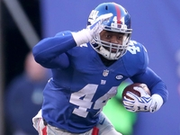
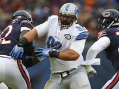
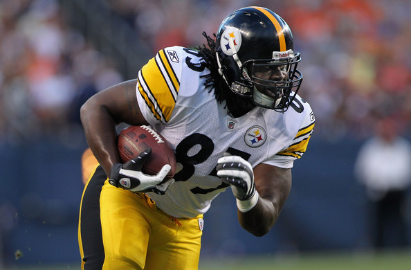
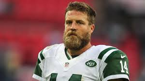
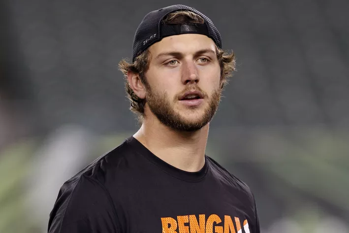

Giants running back Andre Williams expecting breakout season
Former BC RB Andre Williams, a 2014 fourth-round pick, enticed the Giants so much. But entering his third season, he has less than 1,000 rushing yards to his name and eight TDs. Will he break out?
Haloti Ngata finally feeling comfortable in Detroit
Over 14 games and just 2.5 sacks Ngata never got the chance to make himself comfortable in Detroit. Common knowledge suggested he would be a Raven forever, and it takes time for a franchise cornerstone to realize that he's no longer with that franchise.
Peyton Manning: 'I was pretty close' to signing with Titans in '12
Oh what could have been. Recently retired signal-caller Peyton Manning admitted he was "pretty close" to signing with the Titans as a free agent back in 2012. The Titans were one of three teams vying for the QB.
Steelers sign tight end David Johnson to 1-year deal
The Pittsburgh Steelers bolstered their tight end depth on Tuesday, signing veteran David Johnson to a one-year deal. Johnson spent five years with Pittsburgh before signing with San Diego in 2014. Used primarily as a blocker, Johnson has 24 receptions for 224 yards and a touchdown in his career.
Jets, Ryan Fitzpatrick remain as much as $5 million apart
The New York Jets and quarterback Ryan Fitzpatrick remain at least $5 million apart in their contract negotiations, according to Chris Lopresti of WFAN. The Jets reportedly have a front-loaded offer on the table for the quarterback over the next two seasons with an average value of $10 million per season.
Bengals TE Tyler Eifert had ankle surgery, may miss start of season
Tight end Tyler Eifert was a big part of the Cincinnati Bengals' offensive success last season, and the team may be without him at the start of the 2016 season. Eifert had ankle surgery to address an injury he suffered in the Pro Bowl, and although it is described as a "minor procedure," the recovery time is three months. ESPN's Adam Schefter is reporting that Eifert may miss the first couple of games of the season.